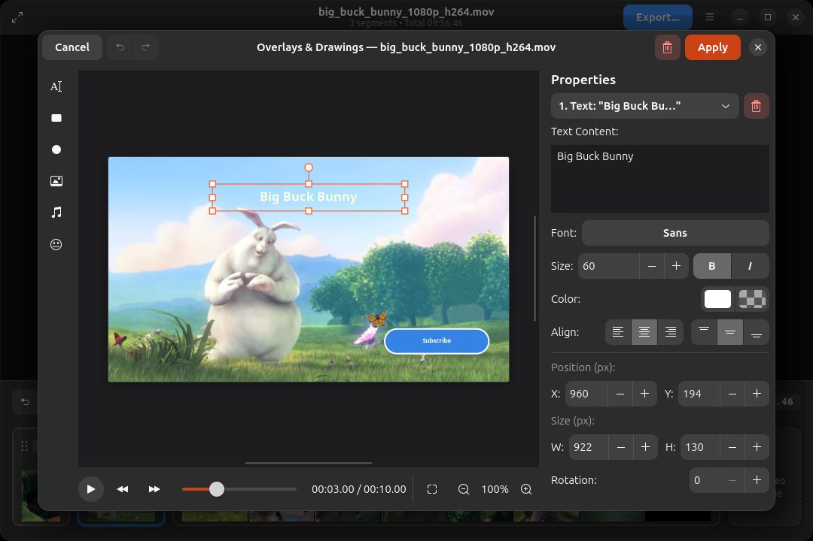

Trim, split, merge, crop, rotate, and add rich graphic overlays to video clips and images. A native GTK4 and Libadwaita experience built specifically for modern Linux desktops.

Cut and slice clips at exact timestamps with millisecond precision.
Add text, shapes, GIFs, stickers, PIP videos, and background audio.
Rotate by 90° increments, flip axes, and crop to 9:16 or 16:9.
Feels right at home on Linux. Responsive, dark-mode native, and lightweight.
Everything you need for everyday video clips, screen captures, and social media exports without bloated complexity.
Video Cut focuses on simplicity and ease of use. Designed natively with GTK4 and Libadwaita to integrate cleanly into the GNOME desktop, it makes cutting, trimming, and reordering video segments straightforward and effortless.

Easily reframe videos for vertical social platforms or zoom into important details. Our visual crop overlay gives you real-time preview feedback with instant aspect ratio snapping.

Combine still images and photographs directly with your video clips. Add background music, voiceovers, or soundtrack audio to image slides to create rich title cards, photo montages, and slideshow transitions.

Elevate your videos with powerful on-screen annotations and visual elements. The built-in Video Overlay Editor gives you multi-layer creative control right inside the app.

Click on any screenshot to view in full resolution.

Configurable containers, video/audio codecs, bitrates, and quality presets.

Drop video files directly onto the window or paste from the clipboard.

Instant split action pill at the playhead position for quick cuts.
Everything you need to know about Video Cut, frame-accurate trimming, overlays, formats, and installation.
Video Cut leverages FFmpeg's filter complex to perform frame-accurate cuts down to the millisecond, apply transformations like crop and rotation, and composite rich graphics. Because clips are re-encoded through modern codecs (H.264, H.265, AV1, VP9, or Apple ProRes), cuts land precisely on the exact frame you choose without keyframe boundary restrictions, maintaining pristine high-fidelity output quality with customizable presets.
Yes! Video Cut 0.4.0 includes a dedicated Video Overlay Editor. You can add multiline titles with custom fonts, colors, outlines, and shadows; draw vector shapes (rectangles and circles/ellipses); import PNG logos, SVG graphics, and animated GIFs; place picture-in-picture video clips; and attach background audio tracks with volume control.
Video Cut is built using native Python, GTK4, and Libadwaita. It follows GNOME Human Interface Guidelines (HIG) with full support for light and dark system color schemes, desktop accent colors, Wayland displays, fractional scaling, and native desktop drag-and-drop / clipboard operations.
Video Cut supports any video or audio format supported by FFmpeg, including MP4, MKV, WebM, MOV, AVI, TS, and audio formats like MP3, AAC, FLAC, OGG, and WAV. You can also mix still photos (PNG, JPEG, WebP) into your timeline projects.
Video Cut provides multiple packaging formats for maximum convenience:
sudo snap install video-cut).Yes! Video Cut is 100% free and open source software licensed under the GNU General Public License v3.0 (GPL-3.0). Source code, discussions, and issue tracking are hosted openly on GitHub.
Choose the package format that best suits your distribution. Current version: v0.4.0
Runs out of the box on Fedora, Arch, Debian, openSUSE, and any modern Linux distribution. No installation required.
chmod +x VideoCut-0.4.0-x86_64.AppImage && ./VideoCut-0.4.0-x86_64.AppImage
One-click install with automatic background updates for Ubuntu, Kubuntu, and any system with snapd.
sudo snap install video-cut
Download the standalone Flatpak bundle from our GitHub release page and install locally.
flatpak install --user ./VideoCut-0.4.0.flatpak
Explore the Python & GTK4 codebase, contribute improvements, or run directly using Poetry / pip.
git clone https://github.com/thor27/video-cut.git
Find release checksums (SHA256), older releases, DEB packages, and release changelogs on GitHub.